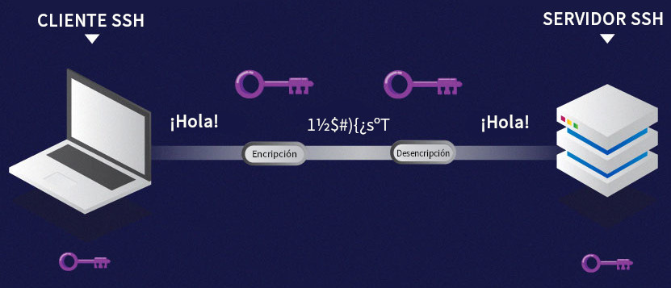
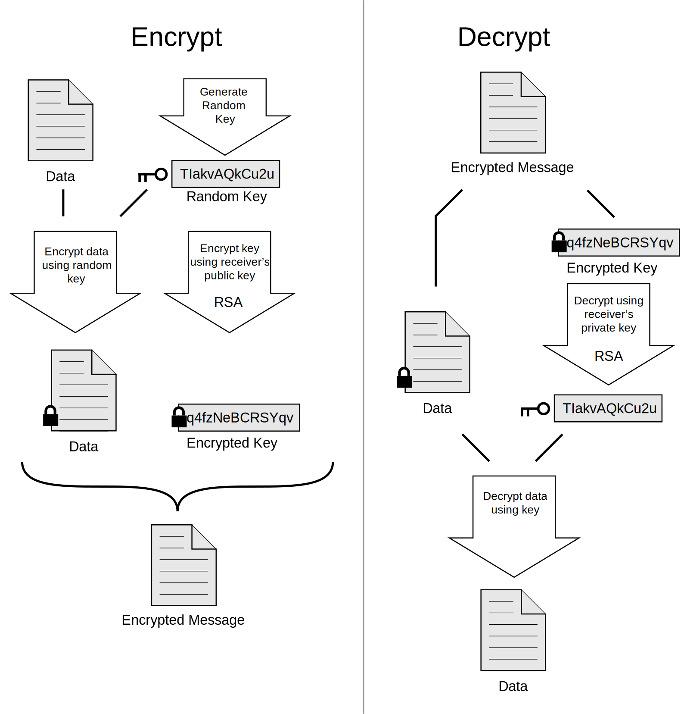
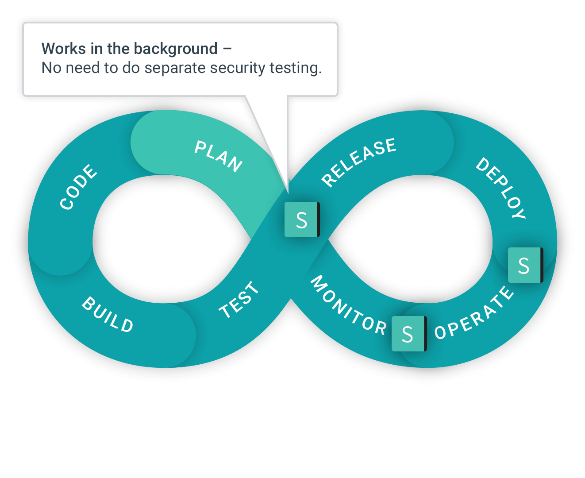
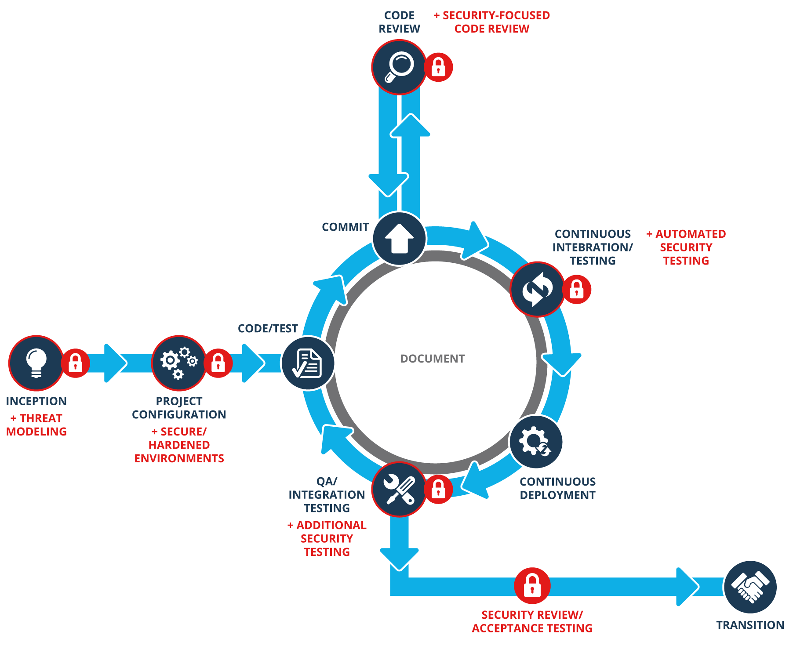

“Passwords are like underwear, you don't let people see it, you should change it very often, and you shouldn't share it with strangers.” -- Chris Pirillo
Conceptos
Prácticas Tradicionales
Equipo aparte revisa justo antes de salir a producción:
Arquitectura
Código
Resultado:
Se aplaza la salida a Producción
Se generan recomendaciones de infraestructura
Se agregan bugs a la Aplicación
Se agregan nuevas Historias de Usuario
Herramientas Tradicionales: TLS/SSL - HTTPS
Herramientas Tradicionales: SSH

Herramientas Tradicionales: PGP

Herramientas Tradicionales: VPNs
PPTP VPN
Site to Site VPN
L2TP VPN
IPsec VPN
SSL VPN
MPLS VPN
Hybrid VPN
Prácticas de Seguridad
Campeones de Seguridad
Personas enfocadas en seguridad
Conceptos de Protección de Datos
Tecnologías
Procedimientos
Arquitectura del Software
Definir Roles de Negocio y asegurar su creación controlada
Identificar sistemas externos que requieren proceso de autenticación
Definir procesos de autenticación
Definir procesos ubicación de llaves privadas
Optar por procesos de creación de llaves temporales
Implementar los mismos mecanismos de acceso en cada Ambiente
Usuario por persona
Agupar usuarios por recursos
Generar llaves temporales


Pipeline de Software
“Thinking of security as code as the only consideration may mean you are oversimplifying. It is certainly one of the big pillars, [but security] is really a complex matter.”
—Francois Renaud